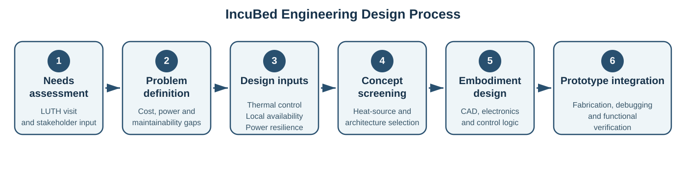
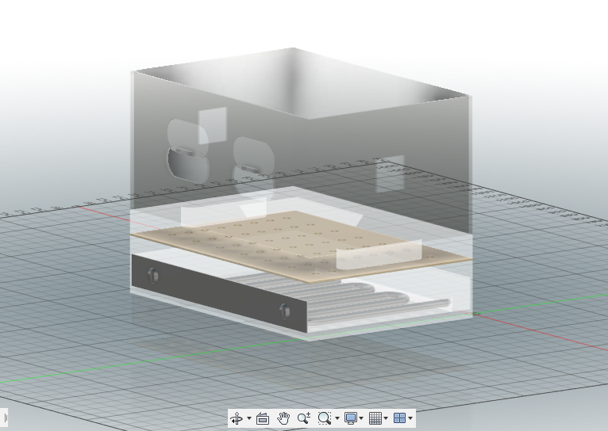
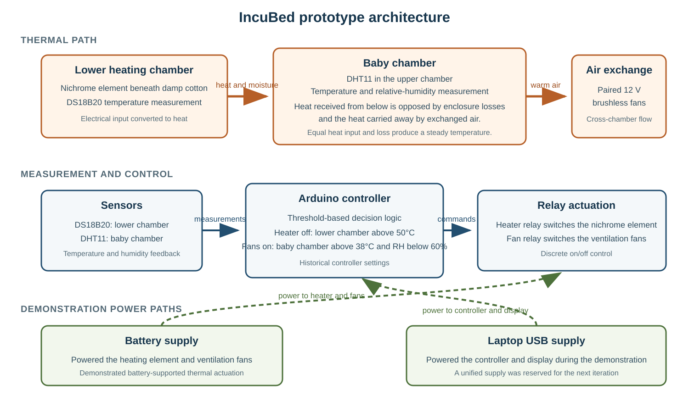
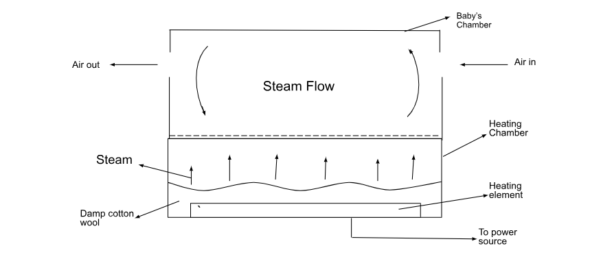

IncuBed: development of a neonatal incubator prototype for rural primary healthcare
Akojede Olorundara (Lead Researcher), Ajayi Ifeoluwa and
Animasahun Ridwanulahi
UNILAG Design Studio, University of Lagos, Nigeria
Abstract
Reliable thermal care for preterm newborns depends on equipment that can be operated and maintained where care is delivered. In many Nigerian primary healthcare settings, unreliable electricity and limited access to replacement parts make this difficult. IncuBed was developed during the 2022 Rice360–UNILAG internship as an early hardware response to that problem. A needs-assessment visit to Lagos University Teaching Hospital informed the design requirements. The resulting device is a cost-effective steam-centered neonatal incubator. Benchtop checks demonstrated closed-loop operation in one integrated prototype. The work established a functional basis for a subsequent design with improved thermal control and an integrated power system.
Keywords: neonatal incubator; thermal regulation; embedded control; low-resource medical device
1. Background and design objective
The World Health Organization classifies a newborn body temperature below 36.5°C as hypothermia [1]. Preterm and low-birth-weight infants are especially vulnerable because they lose heat rapidly and have limited capacity for thermoregulation due to their low body fat to surface area ratio [1–3]. Current WHO guidance places kangaroo mother care at the centre of routine care for these infants, while incubators and warmers remain part of the support required for some unstable newborns [3].
The usefulness of an incubator depends on the system around it. A review of health facilities in sub-Saharan Africa found major gaps in electricity access and supply reliability [4]. Equipment donation also fails when the receiving facility cannot obtain parts, training or maintenance support; WHO guidance therefore recommends that donated devices be selected with the same care as purchased equipment [5].
IncuBed addressed a narrower engineering question: could the essential functions of an infant incubator be integrated using components that were locally sourced by a Nigerian university design team? The intended setting was rural primary healthcare. The prototype was expected to provide a warm chamber, measure its environment and continue thermal actuation during a power interruption. These goals defined the work as an early design study with compliance against the infant-incubator safety standard reserved for later development [6].

Figure 1. Engineering design process used for IncuBed, from needs assessment to an integrated prototype.
2. Design development
2.1 Needs assessment
Needs finding included a visit to the neonatal unit at Lagos University Teaching Hospital (LUTH) where the team met healthcare practitioners and clinic technicians. Hospital personnel identified a group of donated incubators as faulty or abandoned. The observation made serviceability a central design input: supplying equipment does not improve care when the equipment cannot be kept in use.

Figure 2. Incubators documented during the LUTH needs-assessment visit. Hospital personnel confirmed the condition of the units. The photograph is reproduced with permission.
The clinical need was translated into the preliminary requirements shown in Table 1. “Locally available” describes procurement within Nigeria and does not mean that every part was manufactured in the country.
Table 1. Preliminary design requirements and prototype outcome
| Requirement | Prototype response |
|---|---|
| Warm baby chamber | Heat was generated in a lower chamber and transferred through convection to the baby chamber |
| Environmental measurement | Chamber temperature and relative humidity were read with a DHT11; the lower chamber was monitored by a DS18B20 |
| Controlled air exchange | Two 12 V brushless fans were mounted on opposing walls |
| Operation during grid interruption | A battery powered the heater and fans during demonstration |
| Field serviceability | Acrylic and most electronic parts were obtainable in Nigeria |
| Lower acquisition cost | The build was retrospectively estimated at about 500 USD |
| Filtered inlet air | HEPA filtration was specified for later development because the filter was not readily available at the time |
2.2 Concept selection
The earliest concept placed beeswax beneath the infant compartment as a passive thermal store. That choice had a credible material basis. Calorimetry studies describe beeswax as a phase-change material that absorbs and releases latent heat during melting and solidification [7,9]. A separate incubator experiment reported that beeswax storage kept its chamber above 32°C for more than eight hours under the conditions tested [8]. These findings support the original heat-storage rationale but failed further screening because the heating system could not be regulated.

Figure 3. Early beeswax concept from a presentation slide.
The design later moved to an actively switched heater so that heat input could respond to measured chamber conditions. Other concepts included heated beddings and direct resistive heating. A nichrome element placed beneath damp cotton was chosen for the internship build because its components were obtainable and the arrangement could be fabricated within the available workshop time. The decision marked a transition from passive heat storage to active thermal control.

Figure 4. CAD representation of the selected architecture. The perforated layer separates the baby chamber from the lower thermal compartment.
3. Prototype design and implementation
3.1 System architecture
The prototype was divided into a thermal path, a control loop and two demonstration power paths. The DS18B20 monitored the lower chamber while a DHT11 measured temperature and relative humidity in the baby chamber. Both devices provided digital measurements to an Arduino-class microcontroller [10,11]. Relay outputs switched the nichrome heater and ventilation fans.

Figure 5. Functional architecture of the integrated prototype.
3.2 Heat transfer and ventilation
The lower chamber contained approximately 5 m of nichrome 80/20 wire. Current through the wire produced resistive heat. Damp cotton held water close to the element, and the resulting warm humid air passed through openings beneath the baby chamber. Temperature in the upper chamber therefore depended on the heat received from below and the heat lost through the enclosure or carried away by exchanged air.

Figure 6. Project diagram showing heat transfer from the lower chamber and the intended convection path through the baby chamber.
Two 80 mm brushless fans were mounted on opposite walls in the same flow direction. This arrangement produced cross-chamber air exchange with simple hardware. The prototype did not contain the proposed HEPA and activated-carbon filter stage.
3.3 Embedded control
The controller used discrete threshold logic. In the final design record, the heater was switched off when the lower-chamber reading exceeded 50°C. The fans were activated when the baby-chamber reading exceeded 38°C and relative humidity was below 60%. These values document how the prototype was operated; later development would determine control limits through instrumented thermal testing and apply an independent over-temperature cut-off through fuzz logic.
An earlier source-code version remains available in the public project repository. It reads a DS18B20 and switches heater and fan relays at a common 35°C threshold.
3.4 Power arrangement
The demonstration used separate supplies. A battery drove the heating element and both fans. The laptop’s USB connection powered the controller and LCD. This allowed battery-supported heating and ventilation to be shown with the hardware available at the time. A later build would place the full device on a managed power bus with battery-state monitoring.
3.5 Fabrication and team contribution
The only physical prototype was produced during the internship as a collective Team Stark project. Its enclosure was assembled from clear and opaque acrylic. Material dimensions and workshop tooling forced the chamber to be reduced from the first CAD layout. Bonded joints were also revised after early failures.
Akojede Olorundara led the technical implementation, including CAD, acrylic fabrication, circuit wiring and embedded programming. Ajayi Ifeoluwa and Animasahun Ridwanulahi contributed to needs finding and the communication work used to present the project. The team received technical guidance through the Rice360–UNILAG programme and from Dr Olawale Ajibola.

Figure 7. Integrated prototype with the acrylic chamber, ventilation fans, lower thermal compartment and external demonstration hardware.
4. Benchtop evaluation
Evaluation concentrated on whether the assembled subsystems worked together. The nichrome element generated heat after several fabrication iterations. Both temperature-sensing paths produced readings, including the DHT11 installed in the baby chamber. The controller then changed the relay states and actuated the heater or fans when the programmed conditions were reached. The internship produced one working electromechanical assembly with a complete measurement-to-actuation path.
Measurements like warm-up time and temperature uniformity belong in the next verification plan. Patient testing was outside this prototype stage.
5. Engineering assessment
5.1 What the prototype established
IncuBed reduced an observed equipment problem to a buildable system architecture. The prototype also showed that the main structural and electronic parts could be procured locally, with HEPA filtration remaining the important exception.
The heat source was deliberately simple, but its placement inside a wet medium creates a design issue that the next embodiment must resolve. A sealed humidification reservoir and an isolated heater assembly would separate the fluid path from energized conductors. Thermal protection also needs to function if the software, relay or primary sensor fails. IEC 60601-2-19 provides the relevant framework for basic safety and essential performance of an infant incubator [6].
The paired fans proved actuation and visible airflow. Their final specification requires chamber mapping because local airflow can produce temperature gradients or unwanted cooling. Multi-point measurements should therefore be made with a representative thermal load over the expected ambient range. Humidity, sound level and power consumption can be recorded during the same tests. Extended operation would then reveal drift and power-interruption behaviour.
5.2 Cost and maintainability
The prototype cost is roughly one-third of a fairly used incubator that was priced near USD 1,500 at the time, giving an estimated build cost of about USD 500. Receipts and the applicable exchange rate were not retained, so this is a retrospective estimate. It describes the laboratory build only and excludes the work required to manufacture a regulated device.
A mature design would replace hobby-grade sensing where necessary, document interchangeable parts and provide service procedures. The design goal is sustained operation at the healthcare facility, the same concern raised by the LUTH needs assessment and WHO donation guidance [5].
6. Project outputs
The prototype was presented at the 13th Annual Rice360 Global Health Technologies Design Competition in 2023.

Figure 8. Certificate recording Team Stark’s participation in the 2023 Rice360 competition.
TinyTend Limited was incorporated on 20 November 2023 as a possible vehicle for continued development of IncuBed.

Figure 9. TinyTend Limited certificate of incorporation, registration number 7230687.
Nigerian patent application NG/P/2024/89, titled A Cost-Effective Steam Neonatal Incubator for Low-Resource Regions, was filed in February 2024. The Patent Registry acknowledged the application in March 2024. No patent grant was issued.

Figure 10. Patent Registry acknowledgement for application NG/P/2024/89.
Development stopped after the low-fidelity build because the project lacked the personnel and funding required for a market-ready iteration. The remaining engineering work begins with a sealed thermal module and unified power electronics, followed by formal risk management and performance testing.
7. Conclusion
IncuBed is an early neonatal-incubator prototype developed from a need observed in the Nigerian healthcare system. The project moved through the engineering design process and ended with a working integrated assembly. The battery-backed actuation path addressed the immediate problem of unreliable electricity.
References
- World Health Organization. Thermal Protection of the Newborn: A Practical Guide. WHO/RHT/MSM/97.2. Geneva: WHO; 1997. https://www.who.int/publications/i/item/WHO_RHT_MSM_97.2
- Lunze K, Bloom DE, Jamison DT, Hamer DH. The global burden of neonatal hypothermia: systematic review of a major challenge for newborn survival. BMC Medicine. 2013;11:24. https://doi.org/10.1186/1741-7015-11-24
- World Health Organization. WHO Recommendations for Care of the Preterm or Low-Birth-Weight Infant. Geneva: WHO; 2022. https://www.who.int/publications/i/item/9789240058262
- Adair-Rohani H, et al. Limited electricity access in health facilities of sub-Saharan Africa: a systematic review of data on electricity access, sources, and reliability. Global Health: Science and Practice. 2013;1(2):249–261. https://doi.org/10.9745/GHSP-D-13-00037
- World Health Organization. Medical Device Donations: Considerations for Solicitation and Provision. 2nd ed. Geneva: WHO; 2025. https://iris.who.int/bitstream/handle/10665/378274/9789240093621-eng.pdf
- International Electrotechnical Commission. IEC 60601-2-19:2020+AMD1:2023: Medical Electrical Equipment—Part 2-19: Particular Requirements for the Basic Safety and Essential Performance of Infant Incubators. Geneva: IEC. https://webstore.iec.ch/en/publication/64023
- Kabir MS, Yola IA. Beeswax as a low temperature phase change material for thermal storage. FUDMA Journal of Sciences. 2020;4(1):764–769. https://fjs.fudutsinma.edu.ng/index.php/fjs/article/view/118
- Sinaringati S, Putra N, Amin M, Afriyanti F. The utilization of paraffin and beeswax as heat energy storage in infant incubator. ARPN Journal of Engineering and Applied Sciences. 2016;11(2):800–804. https://www.arpnjournals.org/jeas/research_papers/rp_2016/jeas_0116_3404.pdf
- Dinker A, Agarwal M, Agarwal GD. Experimental study on thermal performance of beeswax as thermal storage material. Materials Today: Proceedings. 2017;4(9):10529–10533. https://doi.org/10.1016/j.matpr.2017.06.414
- Analog Devices. DS18B20 Programmable Resolution 1-Wire Digital Thermometer: Data Sheet. Rev. 6; 2019. https://www.analog.com/media/en/technical-documentation/data-sheets/DS18B20.pdf
- Aosong Electronics. DHT11 Temperature and Humidity Sensor. Manufacturer product information. https://www.aosong.com/en/Products/info.aspx?itemid=2257